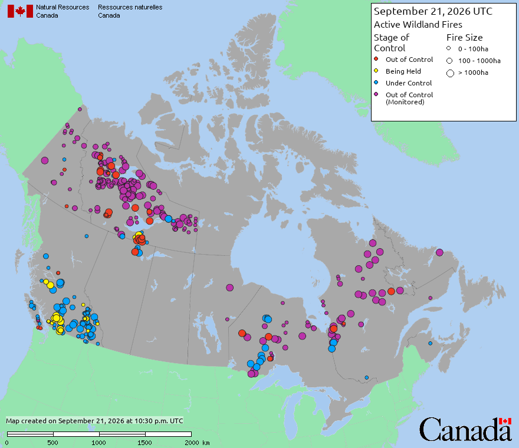
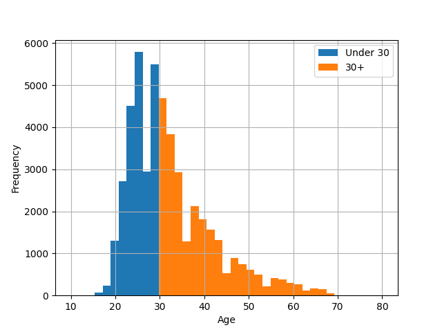

4: Categorical data basics
Code
 Demo Notebook
Demo Notebook Demo Data
Demo DataSlides
 PDF Slides
PDF Slides HTML Slides
HTML SlidesDATA 3464: Fundamentals of Data Processing
Categorical Data Basics
Charlotte Curtis September 22, 2026
Topic overview
- Exploring categorical data
- Basic categorical data encoding strategies
- Out of scope: Fancier encoding strategies, like feature hashing and target encoding
Resources used:
What is categorical data?
- Samples can take on one of several discrete values or groups
- Nominal: no particular order to the groups
- Ordinal: groups relate to each other in a specific order
- Categories can be represented as strings or numeric types
- Domain knowledge is necessary!
Let’s take a few minutes to brainstorm some examples
Exploring categorical data
We’ve already done some of this, but some ideas to consider:
pandas.DataFrame.value_counts()- how many of each category?- Use category to group, then compute summary stats
- Plot color per category
- Scatter plot with jitter
Representing categorical data
- To do math on categorical data, we need to map to numbers
- Consider:
- Ordinal or nominal?
- How many possible categories (cardinality)?
- Any chance new ones might show up?
How could we encode the examples? What are the benefits and drawbacks of each method?
Ordinal encoding

| Category | Feature |
|---|---|
| Under Control | 0 |
| Being Held | 1 |
| *Out of Control (Monitored) | 2 |
| Out of Control | 3 |
* I am not a wildfire expert, this is my best guess at ordering
Nominal categories: one-hot encoding
- Categories have no natural relationship
- Create \(k\) new features from \(k\) categories, very sparse matrix
| Animal | cat | dog | rabbit | |
|---|---|---|---|---|
| cat | → | 1 | 0 | 0 |
| dog | → | 0 | 1 | 0 |
| rabbit | → | 0 | 0 | 1 |
From numbers to categories: discretization

- Sometimes numeric data is better represented as categorical
- Still needs encoding strategy
- Can introduce nonlinear relationships
- Like everything, contextual
Advantages/disadvantages of various methods
Ordinal
- Compact (1 column/feature)
- Only useful for naturally ordered data
- Imposes (linear) relationship
- Difficult to deal with novel categories
One-hot
- No assumptions made about relationships
- Novel features implied by 0
- Memory intensive
- Not good for high cardinality
- Potential collinearity issues
Coming up next
- Lecture: Basic numeric transformations
- Lab: Modelling with categorical data
- Assignment 1 due soon!